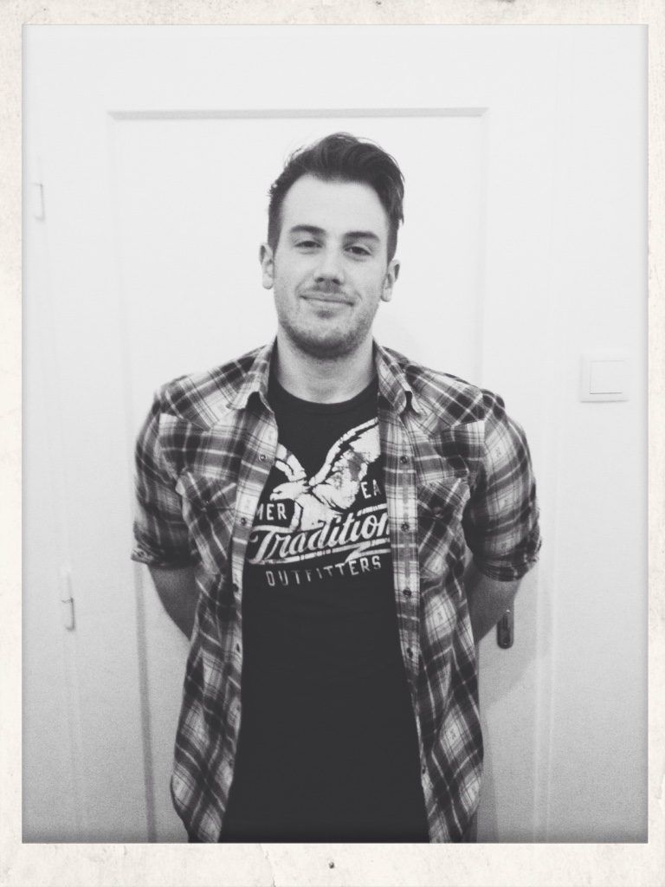

Mag. Harald Weidinger

Summary
I am a motivated person with experience in teaching languages.
Education
- High School Diploma - Engineering College "TGM" (2008-2012)
- Master's Degree in German Philology - University of Vienna (2013-2020)
Work Experience
- Middle school teacher - SMS 10 Wendstattgasse
February 2021 - September 2022
- Taught German and Physical Education to kids aged between 10 and 14
- Planned school events and trips
- Kept record of grades
- German Teacher for Adults - bit schulungscenter GmbH
September 2022 - Present
- Taught German from levels A1 to B1
- Wrote and updated CV's from course participants
- Supervised German Language Tests for Adults
- Held online-courses using Microsoft Teams
Skills
- Organizational skills: ⭐️⭐️⭐️⭐️⭐️
- Microsoft Teams: ⭐️⭐️⭐️⭐️
- Teaching skills:⭐️⭐️⭐️⭐️⭐️
Awards and Certifications
- Development profile for teaching- SMS10 Wendstattgasse (September 2022)
- Gender Mainstreaming Certificate - Beratung, Training & Mediation (September 2020)
- Diversity Management - Beratung, Training & Mediation (September 2020)
- Cambridge Advanced English Certificate - University of Cambridge (March 2013)
Other